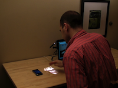

|  |
I am actively recruiting undergraduate, master's, and Ph.D. students to join the CU Superhuman Computing Lab. Join us and work on ways to make technology more accessible for everyone.
I generally work on research related to making technology more accessible to people with disabilities, people with chronic health conditions, and other underrepresented groups. These projects range from studying how people use technology (e.g., studying how blind people interact with images on Twitter), prototyping new types of technology (e.g., developing wearable navigation aids for blind people), and creating new software and hardware devices to help people with disabilities (e.g., creating an interactive armrest for power wheelchair users).
For more information on the projects I work on, see my publications and our lab page.
Actually, I am! Although I would be interested in working on new projects in the areas of accessible computing, wearable computing, tangible interaction, and related areas, there are several project areas that I am specifically interested in recruiting students to work on:
If you have questions about these projects, send me an email.
Our lab consists of undergraduate and graduate students from programs across campus, including Computer Science, Technology, Arts & Media, Information Science, and other programs. Our current projects include creating accessible comic books, designing interactive 3D printed objects, and studying customized assistive technologies.
Our physical lab space is located in the Discovery Learning Center (DLC) at the University of Colorado Boulder. We share lab space with the Sikuli Lab and Tactile Picture Books project. Our lab has 3D printers and other fun tools, and is adjacent to one of our campus's larger majer spaces, the Integrated Teaching and Learning Laboratory (ITLL).
CU Boulder is a top-ranked engineering school. Our computer science department contains top research in human-computer interaction (HCI), AI, robotics, software engineering, and other topics.
CU is currently undergoing a renaissance in HCI research, with active research activities going on across three units on campus: Computer Science, ATLAS, and Information Science. For conducting accessibility research, our lab has strong ties to local organizations both on and off campus, including the Colorado Center for the Blind, the Coleman Institute for Cognitive Disabilities, and Assistive Technology Partners.
Boulder, Colorado is often ranked one of the best college towns. Boulder is a walkable and bikeable town with easy access to nature, pleasant weather, reliable public transit, and good coffee.
For current CU students: If you're interested in getting involved in research, please send me an email. A good way to get involved with my work is to take one of my classes. Depending on the fit, you may be able to get involved in research through an independent study or another option. For undergraduates, the Discovery Learning Apprenticeship program is a great way for engineering students to get involved in research.
For non-CU students: Consider applying to one of our undergraduate or graduate programs. Although I am faculty in Computer Science, I can also advise students in ATLAS and Information Science. For Ph.D. students applying from outside, I am typically looking for students with experience in conducting human-computer interaction and accessibility research. Funded positions may be available for students who are a good fit for current projects.
Please send me an email to set up a time to discuss research opportunities.
As a researcher with a disability, I am committed to mentoring and supporting other students with disabilities. If this describes you, and you are interested in getting involved with research, please send me an email. I'd be happy to talk with you about research opportunities, including some unique opportunities for research internships that may be available via the AccessComputing Alliance.